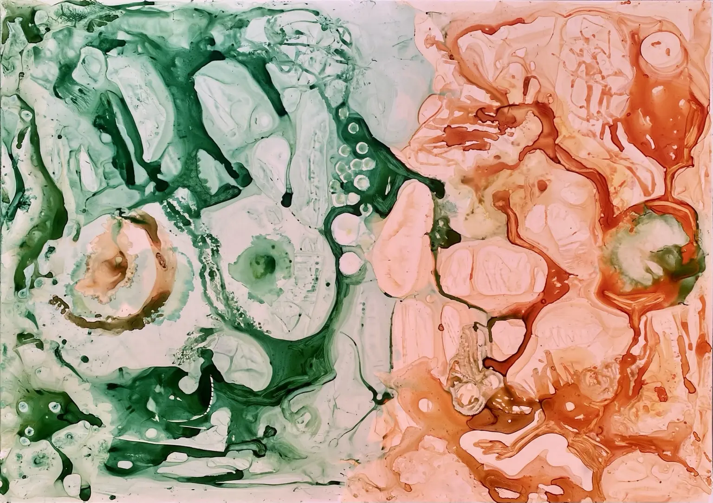

Artista visual · Murcia
Pintura sobre papel
Cuerpo, gesto, color y materia se encuentran en una práctica pictórica abierta al hallazgo sobre el papel.

Sobre mí
Marta Gómez de la Vega
Soy artista visual, escritora y psicóloga. Mi práctica se desarrolla entre la pintura y la escritura, explorando las relaciones entre cuerpo, gesto, color, materia y palabra. Trabajo principalmente sobre papel y observo el comportamiento de los materiales, sus encuentros y su capacidad para modificar el rumbo de la obra.
Vivo y trabajo en Murcia.
Mi proceso comienza escuchando el cuerpo. Esa escucha me conduce hacia un papel, unos colores y unos primeros movimientos, siempre a partir de los materiales que elijo. Experimento con sus reacciones, sus encuentros y las transformaciones que provocan en la obra.
Me interesan especialmente la mancha y el color: cómo se expanden, se superponen, se contaminan y transforman el espacio. Su convivencia configura un universo policromático en el que ninguna combinación está prohibida. Cada encuentro puede generar su propio equilibrio, incluso partiendo del contraste, la tensión o el accidente.
El grafito, el garabato, la línea y la palabra introducen ritmos diferentes. Observo lo que aparece, intervengo, espero y vuelvo a decidir. No parto de una imagen preconcebida; la voy encontrando en ese diálogo entre cuerpo, materia, gesto y lenguaje.
Obra y trayectoria
Conoce mi trabajo.
Contacto